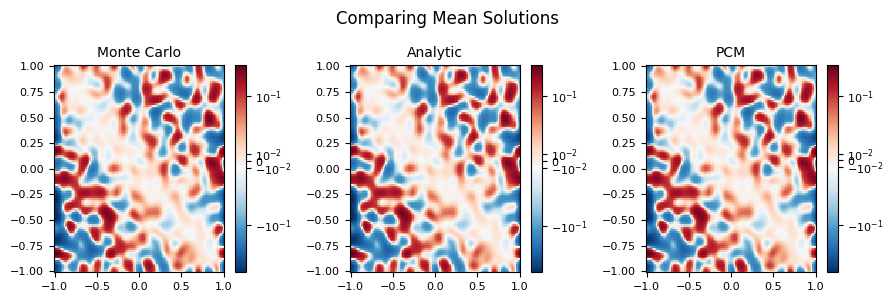

Uncertainty Quantificaton of Stochastic Nonlinear PDEs
· 1,320 words · 7 minutes reading time Statistics math
Motivation
The Cahn-Hilliard equation is a fourth-order, nonlinear, time-dependent PDE that models phase separation in a binary mixture — think of two substances (or two phases of one substance) un-mixing into distinct regions. It shows up all over materials science, and like most equations of its kind it cannot be solved analytically.
For this project (my AM 238 research project with Daniele Venturi) I made the problem stochastic: I injected noise into the potential-energy function that governs how the mixture separates. The result is a stochastic, nonlinear, fourth-order PDE, and the question becomes one of uncertainty quantification — not "what is the solution?" but "what is the mean and variance of the solution field given a random input?" The traditional answer is Monte Carlo, but Monte Carlo needs an enormous number of samples to converge and quickly becomes too expensive. The goal here was to see whether smarter sampling methods could match Monte Carlo's accuracy at a fraction of the cost.
I evaluate four strategies for the mean-field solution: Monte Carlo, Dynamically Orthogonal (DO) field equations, generalized Polynomial Chaos (gPC), and the Probabilistic Collocation Method (PCM).
The Cahn-Hilliard Model
Let $u(\mathbf{x}, t)$ be the local concentration, scaled so that $u < 0$ marks phase $A$ and $u > 0$ marks phase $B$. With a chemical potential $\mu$, Fick's first law $\mathbf{J} = -D\nabla\mu$ and conservation of mass ($\partial_t u + \nabla\cdot\mathbf{J} = 0$) give the general Cahn-Hilliard form
$$ \frac{\partial u}{\partial t} = \nabla\cdot(D,\nabla\mu). $$
The physics of separation lives in $\mu$. Starting from a Landau free energy and keeping the symmetric double-well shape, the potential is built as $F(T^*, u) = \tfrac{1}{4}\big(a - (bu)^2\big)^2$, where $a, b$ depend on temperature $T$. For $a < 0$ the well has a single minimum; as $a$ crosses zero a bifurcation creates two minima separated by an energy barrier at $u = 0$ — and that double well is exactly what drives the mixture apart.

Adding a gradient-energy term $\tfrac{\gamma}{2}|\nabla u|^2$ (which penalizes fine-scale mixing and forces the material into distinct domains) and non-dimensionalizing reduces the model to
$$ \frac{\partial u}{\partial \hat{t}} = \nabla^2!\left(\alpha^2 u^3 - u - \nabla^2 u\right), \qquad \alpha = \frac{b}{\sqrt{a}}. $$
The single parameter $\alpha$ sets the shape of the potential about $u = 0$: small $\alpha$ pulls particles to their phase minima quickly, larger $\alpha$ more slowly. This is the knob I perturb to model real-world noise.
Making it stochastic
In a real system the temperature is never perfectly fixed, and those fluctuations change $a$ and $b$ — and therefore $\alpha$. Promoting $\alpha \to \alpha(\xi)$ for a random variable $\xi$ turns the model into a stochastic PDE,
$$ \frac{\partial u(\mathbf{x}, t, \xi)}{\partial \hat{t}} = \nabla^2!\left(\alpha(\xi)^2 u^3 - u - \nabla^2 u\right). $$
Phase separation requires $0 < \alpha \ll 1$, so I take $\alpha$ uniform on $\Omega = [0.001, 0.1]$ (exponential and Gaussian PDFs are hard to sample reliably at this scale). The plots below show how the potential's shape varies with $\alpha$.

Numerical solver
Every method below rests on the same deterministic solver: second/fourth-order finite differences in space (a 5-point stencil for $\partial_{xx}$ and a 5-point stencil for $\partial_{xxxx}$, etc.) and an explicit 3-step Runge-Kutta scheme in time,
$$ u^{t+1} = u^{t} + \frac{\Delta t}{6}\left(k_1 + 4k_2 + k_3\right), $$
with $\Delta x = \Delta y = 0.017$, $\Delta t = 10^{-5}$, and $\mathbf{x} \in [-1,1]^2$. Starting from a random initial field, this resolves the characteristic coarsening of the two phases over time.

The Four UQ Methods
Monte Carlo. Draw many samples of $\alpha$, solve the deterministic PDE for each, and average. It is simple and unbiased — the mean and variance are just the empirical mean and variance over the ensemble — and I use a 5000-sample run as the reference "truth." Its weakness is cost: the error shrinks only like $1/\sqrt{N}$, so high accuracy demands enormous $N$.
Dynamically Orthogonal (DO) field equations. Expand the solution as a mean plus a sum of orthogonal spatial modes carrying zero-mean stochastic coefficients, $u = \bar{u} + \sum_i \hat{u}_i(\mathbf{x},t),Y_i(t,\xi)$, evolved under the dynamically-orthogonal constraint. In principle this propagates only the handful of modes that matter. In practice, applying it to Cahn-Hilliard produces products of high-order derivatives ($\partial^n\hat u_i,\partial^n\hat u_j$) that diverge for non-smooth initial data, and the propagator contains fourth-order tensors whose per-timestep flop count is intractable. Conclusion: too expensive and too algorithmically complex to solve here.
Generalized Polynomial Chaos (gPC). Expand the solution in a basis of polynomials $P_k(\xi)$ that are orthogonal with respect to the input PDF, $u(\mathbf{x},t,\xi) = \sum_k \hat{u}_k(\mathbf{x},t),P_k(\xi)$, build the basis with the Stieltjes recurrence, and project the PDE onto each basis function to get a coupled system of deterministic PDEs. The mean is then $\hat u_0$ and the variance is $\sum_k \hat u_k^2,\mathbb{E}{P_k^2}$. Unfortunately the projection generates the same divergent derivative-product terms as DO, and a flop count makes it concrete: even a coarse $N=100$ grid, $M=10$ modes, and 1000 steps costs ~3 teraflops for just the first part of the first term. Conclusion: also too expensive.
Probabilistic Collocation Method (PCM). This is the method that works. Instead of coupling the modes, PCM evaluates the solution at carefully chosen collocation nodes $\xi^j$ in the support of the input PDF, $u(\mathbf{x},t,\xi) \approx \sum_j u_j(\mathbf{x},t,\xi^j),P_j(\xi)$, which yields an uncoupled family of deterministic PDEs — one per node — each solved with the same RK solver as before. I generate the nodes and weights as Gauss-quadrature points via the Stieltjes algorithm (the eigenvalues/eigenvectors of the recurrence matrix $S$). With $M = 5$ nodes the mean and variance are simple weighted sums,
$$ \mathbb{E}{u} \approx \sum_{j} w_j, u_j, \qquad \mathrm{Var}{u} \approx \sum_{j} w_j, u_j^2 - \Big(\sum_j w_j, u_j\Big)^2 . $$
Because the system is uncoupled, there are no divergent cross-terms and the cost is just five deterministic solves.


Results
The headline comparison is PCM against the 5000-sample Monte Carlo reference (and the analytic mean). The mean fields are visually indistinguishable — PCM reproduces the Monte Carlo answer using only five deterministic solves rather than five thousand.

The takeaways:
- Monte Carlo works but is wasteful — accurate, unbiased, and the natural baseline, but its $1/\sqrt{N}$ convergence makes high accuracy very costly.
- DO and gPC are elegant but impractical here. Both reduce the SPDE to deterministic systems in theory, but Cahn-Hilliard's nonlinearity produces diverging high-order derivative products and tensor terms with intractable flop counts. They are dead ends for this particular equation.
- PCM is the winner. By decoupling the stochastic problem into a few independent deterministic solves at Gauss-quadrature nodes, it sidesteps the divergence entirely and matches the Monte Carlo mean field at a tiny fraction of the cost — roughly three orders of magnitude fewer solves in this experiment.
The broader lesson is that the "obvious" spectral UQ methods (DO, gPC) are not universally applicable: a strongly nonlinear, high-order operator can break them, and a well-chosen collocation scheme can be both simpler and dramatically cheaper.